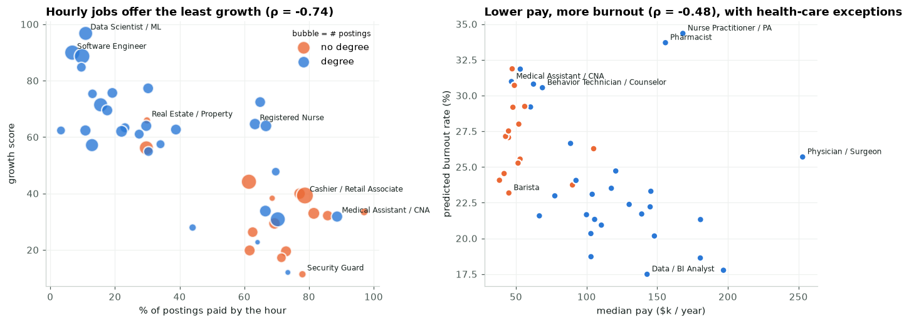
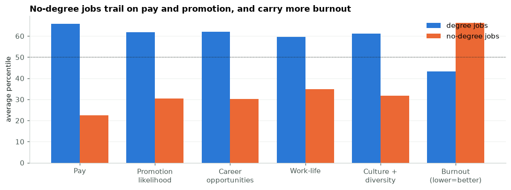

More than a third of US job postings ask for no college degree. These are the jobs most open to first-generation workers, career changers and people who can't afford college. Do they lead anywhere? I combined what employees say about their jobs with what employers offer, and built models that predict how much growth a job gives.


Each occupation gets a percentile (0–100) on seven components, then a weighted average. Burnout counts against the score. Move the sliders to set your own priorities; the whiskers show the 90% bootstrap interval and appear only at the default (equal) weights.
All test sets are split by company: no employer appears in both training and test data, so the model can't score well by memorising one firm's postings or reviews.
Ridge regression on TF-IDF of title and description, plus job type, state, occupation and required education. Dollar figures are stripped from descriptions first so the model can't read the answer.
Phrases that push the prediction toward burnout:
Calibration gap = mean predicted rate − actual rate. A positive gap means the model over-states burnout for that group.
All code is in the job_roi_model folder: the notebook analysis.ipynb tells the full story, and README.md has the details. Put glassdoor_reviews.csv and indeed_job_listings.csv in the folder above it, then:
python3 -m venv .venv
.venv/bin/pip install -r job_roi_model/requirements.txt
cd job_roi_model
../.venv/bin/jupyter nbconvert --to notebook --execute --inplace analysis.ipynb --ExecutePreprocessor.timeout=-1That runs everything from the raw files in about 5 minutes on a laptop: extraction, the three models, scores, ROI, charts and the calculator model. Seeds are fixed, so the numbers on this page come back the same. To score your own postings: .venv/bin/python job_roi_model/growth_model.py score my_postings.csv.